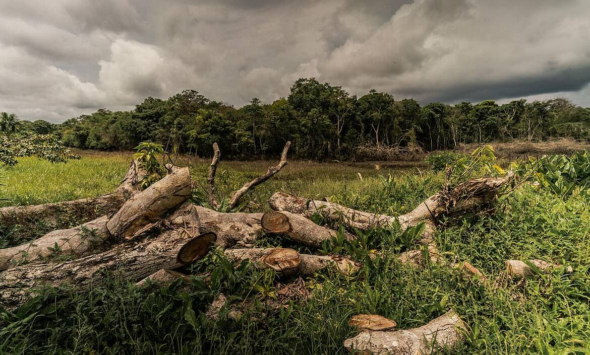

Pérdida de biodiversidad
Cuando desaparecen los bosques, muchos animales y plantas pierden su hábitat natural. Esto puede provocar una disminución de sus poblaciones y afectar el equilibrio de los ecosistemas.
¿En que afecta?
La pérdida de bosques produce diferentes efectos sobre el medio ambiente y puede afectar tanto a los ecosistemas como a las personas.

Cuando desaparecen los bosques, muchos animales y plantas pierden su hábitat natural. Esto puede provocar una disminución de sus poblaciones y afectar el equilibrio de los ecosistemas.
Los bosques almacenan carbono y ayudan a regular el clima. Al destruirlos, se libera parte del carbono almacenado y disminuye la capacidad de los ecosistemas para absorber dióxido de carbono.
Las raíces de los árboles ayudan a mantener el suelo en su lugar. Sin suficiente vegetación, la lluvia y el viento pueden provocar una mayor erosión y pérdida de nutrientes.